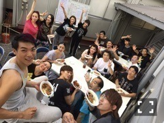
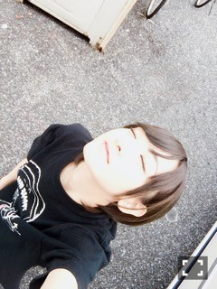
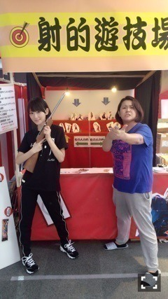
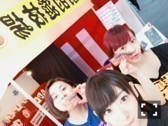

| 2016/09 18 Sun | 日々成長しているよ(・ω<) |
舞台 こち亀も
気づけば明日東京千秋楽ですっ！！
早いな〜早いな〜
なんか、切ないな〜
やっと自分の中で落ち着いて出来るようになってきたのに〜(´；ω；｀)
舞台ってすごいですねっ！！
毎日自分が舞台に立つ時、
袖でみんなのお芝居を観ている時、
毎日違うから、毎日お勉強出来ますヽ(・∀・)ノ
改めて、こち亀が私にもたらした事は相当デカイのだと。。
このインプットはすごいよっ！！
この時期のインプットは有難い


昨日のマチソワ間に
石井さんがカレーをふるまって下さいましたっ！！
美味しかった〜ヽ(・∀・)ノ⭐️⭐️
幸せに包まれました
みなさん優しいお兄ちゃんお姉ちゃんですっ


みて、この安心しきった顔


ロビーの縁日に武者先輩といったよヽ(・∀・)ノ

髪の毛長い方の女性えっちゃんヽ(・∀・)ノ
えっちゃんに毎日声出しから歌を見てもらっていますヽ(・∀・)ノ
おかげで、前より歌えるようになってきたヽ(・∀・)ノ⭐️⭐️
毎日ありがとうございますっ！！
スタッフさんも、いつもマイクや、舞台を動かして下さったり、照明をつけて下さったり、
アドバイス下さったりありがとうございますっ(´；ω；｀)
のんちゃん、よーこちゃんが来てくれたよ〜ヽ(・∀・)ノ
今日は亮介くんも来てくれたよヽ(・∀・)ノ
コープスファミリーありがとうっヽ(・∀・)ノ⭐️⭐️
さ、明日の為に寝ますっ
へばなっ☆彡
コメント(931)
2016/09/18 20:54